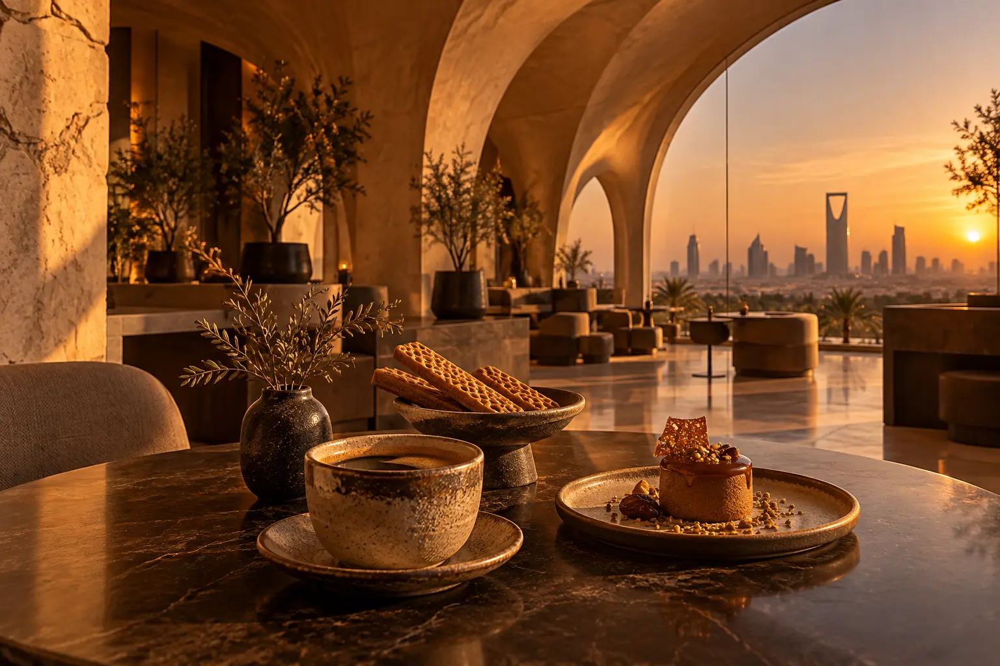

01
قهوة يومية
خيارات بالحليب، قهوة سوداء، وقهوة فلتر.
تصوّر رقمي مستقل يجمع هوية المقهى، خيارات القهوة والحلويات، والموقع في تجربة سريعة وواضحة للموبايل.

المعلومات أدناه جرى التحقق منها من ملف Google Maps في 9 أكتوبر 2026. ساعات العمل قد تتغير، لذلك يفضّل التأكد قبل الزيارة.
نعم، ملف Google Maps يدرج خدمة السيارات ضمن خيارات الخدمة.
نعم، المصادر المنشورة تذكر أم علي والتشيزكيك والمخبوزات، وتظهر وافل ستيكس ضمن ملف الخرائط.
لا. هذا تصميم مقترح مستقل من Amjad Dannan وغير معتمد من المقهى.
افتح الاتجاهات أو اتصل مباشرة للاستفسار عن ساعات اليوم.
الصورة توليدية توضيحية وليست صورة للمحل أو لمنتجاته. لا تستقبل هذه الصفحة حجوزات أو مدفوعات أو بيانات.